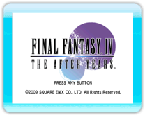
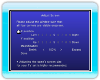

9 |
La pantalla de inicio |
 |

Pulsa cualquier botón del Wii Remote (excepto el Botón HOME) en la pantalla de inicio para que aparezca el menú de inicio. Mueve el cursor con

● "Adjust Screen"(Ajustar pantalla) Aquí podrás cambiar los ajustes "X / Y position" (Posición X/Y) (izquierda y derecha, y arriba y abajo) y "Magnification" (Ampliación) para que las cuatro esquinas de la ventana encajen en la pantalla. Selecciona "Done" (Hecho) cuando hayas realizado todos los ajustes.
|

 |
 |
 |